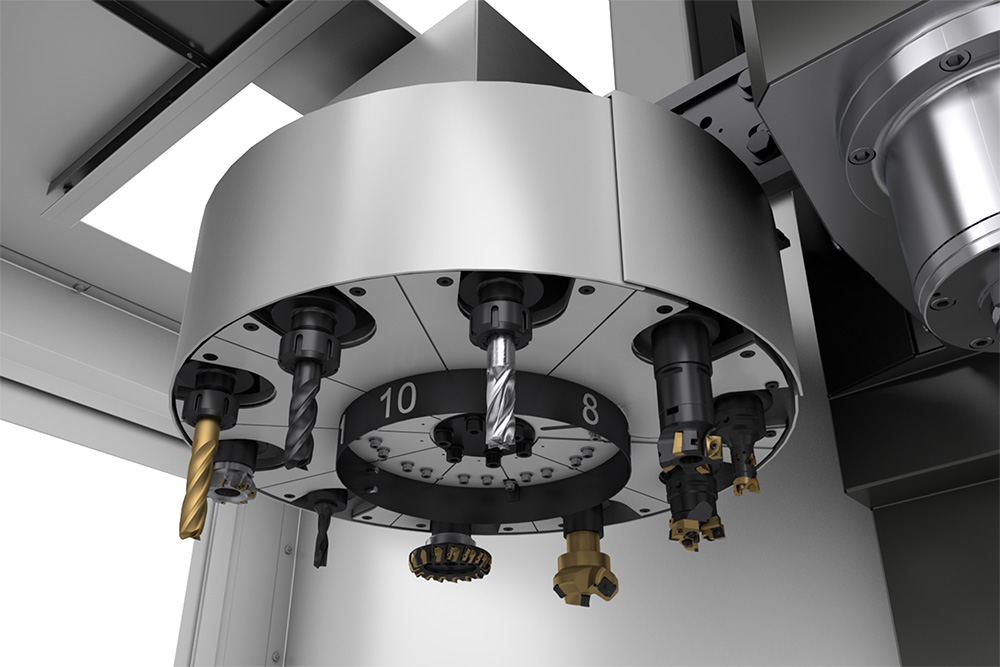

Autumn 2018
During ME318, the computerized machining class at Stanford, I encountered a few issues in setting up my programs. The machines themselves are incredibly accurate but also quite dumb. They do exactly what you tell them to do, and there are few failsafes to handle your mistakes. I created PRLCNC in order to address two problems. The first is that the course information about which to calculate speeds for the machine is scattered throughout slidedecks and spreadsheets. The second problem is that once you are done making your program, you have to fill out a tool setup sheet to present to a TA before you actually run your cut on a machine. This is to ensure that you're using reasonable speeds and that your tools are loaded in the correct order. An error could lead to destroying your workpiece, breaking a tool, and damaging the machine. The paperwork is important, but it can also get tedious and messy.
PRLCNC centralizes the information about machine speeds and integrates it into a calculator. Users can also create setup sheets with the job information as well as the tool order. The relevant information for checkoff is also displayed. All of this ensures that any process outside of the programming can be addressed within a single web app. The project is currently on its first version, and I will be working with students in the Product Realization Lab to further refine this tool.

Tools are loaded manually into a changer like this. You would confirm the order with that on your setup sheet.
This project also extended my skills within frontend development. I learned to use the Vue.js framework when I interned at ProGlove, and I wanted to tackle different UIs and become more comfortable with data reactivity. PRLCNC uses local storage and is also available as a progressive web app for offline use. I chose to use the Buefy component library in order to build familiarity with a toolkit that I could use for future projects. The most challenging process was fine tuning the behaviors of the input modals and data fields. I wanted the most intuitive user experience, and given that it aimed to address two separate issues, I designed interfaces that reflected the unique needs of each one.